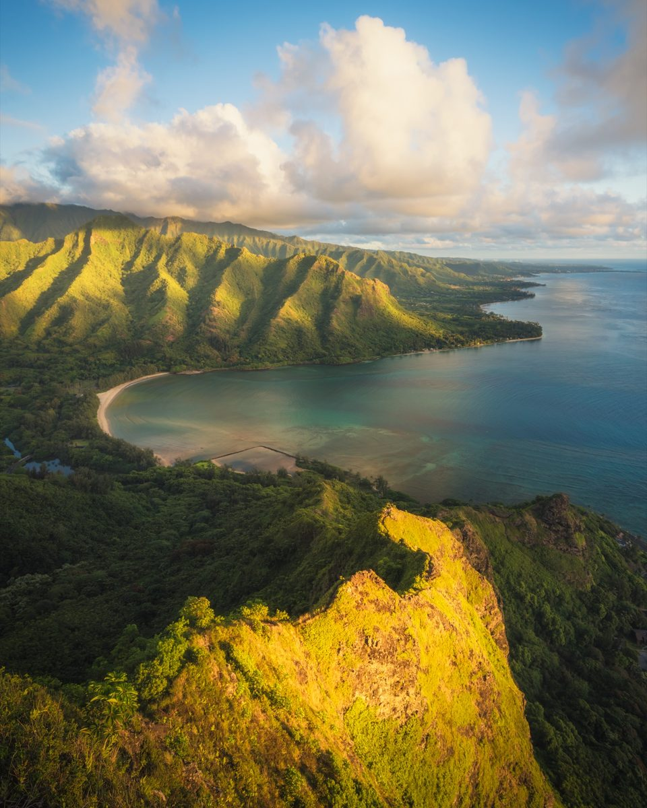

About Kawika Lopez
Kawika Lopez is a landscape and aerial photographer based on Oʻahu, sharing the beauty of the islands and the lessons in them.
He found photography and video in high school, went on to study creative media, and has made his living behind a camera ever since, as a photographer and a filmmaker.
Most of the photographs here start in the dark. He hikes ridgelines before sunrise to be in place when the first light reaches the Koʻolau, or flies a drone along the coast to find what you can only see from above: the reef lines off Lanikai, the curves of the Kaiwi coast highway, the folds in a valley wall.
Every print has a name, many of them in Hawaiian, and a short story about how it was made and what it means. Mālie is about water wearing down stone. Ānuenue is about finding something to be grateful for. ʻĀlina is a reminder that scars can be beautiful.
Each piece is made to carry a feeling, whether that's calm, wonder or the start of an adventure. On a wall it can change the whole feel of a room, adding warmth and personality at home or making an office feel more welcoming. Every print is made locally here on Oʻahu, on gallery-wrapped canvas or metal, and you can pick yours up on the island or have it shipped anywhere in the US.
